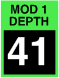
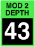

FILTER mod depth
These control the amount of filter tuning modulation. The displayed values are the number of semitones per unit of modulation. There are five of these parameters for each filter.
Toolkit
These are contained in the Filter mod clusters within the Filter section.
Chroma panel
These are contained in the CUTOFF section of the right panel, under the following parameter numbers:
| mod 1 | mod 2 | mod 3 | mod 4 | mod 5 | |
|  |  |
|
|
These appear in the display as Filter Mod1-5 Depth.
MIDI
These are accessed via the following NRPNs:
| mod 1 | mod 2 | mod 3 | mod 4 | mod 5 | ||
| A | 1,60 | 1,63 | 1,65 | 1,67 | 1,69 | |
| B | 2,60 | 2,63 | 2,65 | 2,67 | 2,69 |
Since these are bipolar parameters, the values are offset by 64.
Values
The values have fine resolution near zero and coarse resolution at the extremes:
| MIDI | display | ||
| 0 | –64 | ||
| • • • |
• • • |
(steps of 2) | |
| 14 | –36 | ||
| • • • |
• • • |
(steps of 1) | |
| 46 | –4 | ||
| • • • |
• • • |
(steps of 0.5) | |
| 50 | –2 | ||
| • • • |
• • • |
(steps of 0.3) | |
| 52 | –1.4 | ||
| • • • |
• • • |
(steps of 0.2) | |
| 56 | –0.6 | ||
| • • • |
• • • |
(steps of 0.1) | |
| 60 | –0.2 | ||
| • • • |
• • • |
(steps of 0.05) | |
| 64 | off | (default) | |
| • • • |
• • • |
(steps of 0.05) | |
| 68 | +0.2 | ||
| • • • |
• • • |
(steps of 0.1) | |
| 72 | +0.6 | ||
| • • • |
• • • |
(steps of 0.2) | |
| 76 | +1.4 | ||
| • • • |
• • • |
(steps of 0.3) | |
| 78 | +2 | ||
| • • • |
• • • |
(steps of 0.5) | |
| 82 | +4 | ||
| • • • |
• • • |
(steps of 1) | |
| 112 | +34 | ||
| • • • |
• • • |
(steps of 2) | |
| 127 | +64 |